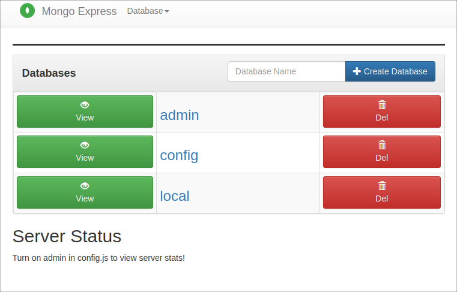

Complete demo project
See provided/demo-kubernetes-components/.
Minicube cluster must be running (if not start it with minicube start).
$ kubectl get all
NAME TYPE CLUSTER-IP EXTERNAL-IP PORT(S) AGE
service/kubernetes ClusterIP 10.96.0.1 <none> 443/TCP 2d12hSo the cluster is empty and we are starting from scratch.
We are going to create the file provided/demo-kubernetes-components/mongo.yaml.
$ cd ~/Kubernates/mongo_demo
vi mongo.yamlFill it with the initial configuration with lines 1..19.
Then visiting MongoDB Docker Hub page to find the image usage
details, particularly, that it listens on the port 27017 by default and uses environment
variables MONGO_INITDB_ROOT_USERNAME and MONGO_INITDB_ROOT_PASSWORD.
Adding this configuration but not specifying the exact secret values in the configuration file. Using Secret component instead.
Copying file
provided/demo-kubernetes-components/mongo-secret.yaml
to our working directory. type: Opaque would be different if we used SSL/TLS. Here's the way
the base64-encoded strings were obtained.
$ echo -n 'username' | base64
dXNlcm5hbWU=
$ echo -n 'password' | base64
cGFzc3dvcmQ=This is not a secure way of keeping secret data. There are built-in encryption options that are not enabled by default.
Applying the Secret:
$ kubectl apply -f mongo-secret.yaml
secret/mongodb-secret created
$ kubectl get secrets
NAME TYPE DATA AGE
default-token-fwttv kubernetes.io/service-account-token 3 2d18h
mongodb-secret Opaque 2 56sFilling the mongo.yaml file. Instead of
env:
- name: MONGO_INITDB_ROOT_USERNAME
value: usernamesetting
env:
- name: MONGO_INITDB_ROOT_USERNAME
valueFrom:
secretKeyRef:
name: mongodb-secret
key: mongo-root-usernameApplying the Deployment:
$ kubectl apply -f mongo.yaml
deployment.apps/mongodb-deployment created
$ kubectl get all
NAME READY STATUS RESTARTS AGE
pod/mongodb-deployment-796577dc64-l8sfd 1/1 Running 0 73s
NAME TYPE CLUSTER-IP EXTERNAL-IP PORT(S) AGE
service/kubernetes ClusterIP 10.96.0.1 <none> 443/TCP 2d18h
NAME READY UP-TO-DATE AVAILABLE AGE
deployment.apps/mongodb-deployment 1/1 1 1 73s
NAME DESIRED CURRENT READY AGE
replicaset.apps/mongodb-deployment-796577dc64 1 1 1 73sSo we see the running Pod, The Deployment and the ReplicaSet.
We will define multiple documents in one YAML file (separated by ---). Adding the lines starting
with --- in file
provided/demo-kubernetes-components/mongo.yaml
into the file with the same name in our working directory. This is reasonable since we cannot use
a DB server without a Service. In this part:
kind: Secret defines that a Service is configured;selector/app: mongodb links the Service with the Deployment;port: 27017 — the port that's exposed outside;targetPort: 27017 — the port in the target Pod where the requests will be forwarded.Now applying the same file:
$ kubectl apply -f mongo.yaml
deployment.apps/mongodb-deployment unchanged
service/mongodb-service created
$ kubectl get services
NAME TYPE CLUSTER-IP EXTERNAL-IP PORT(S) AGE
kubernetes ClusterIP 10.96.0.1 <none> 443/TCP 2d19h
mongodb-service ClusterIP 10.105.29.12 <none> 27017/TCP 78s
$ kubectl describe service mongodb-service
Name: mongodb-service
. . .
Endpoints: 172.17.0.6:27017
. . .
$ kubectl get pods -o wide
NAME READY STATUS RESTARTS AGE IP NODE NOMINATED NODE READINESS GATES
mongodb-deployment-8f6675bc5-x2pzj 1/1 Running 0 15m 172.17.0.6 minikube <none> <none>See provided/demo-kubernetes-components/mongo-express.yaml.
To create this file we visited the Mongo Express Docker Hub page
found that Mongo Express server listens on the port 8081 by default and uses a lot of
environment variables from which we need:
ME_CONFIG_MONGODB_PORTME_CONFIG_MONGODB_SERVERME_CONFIG_MONGODB_ADMINUSERNAMEME_CONFIG_MONGODB_ADMINPASSWORDFor the secret data we use the existing Secret component. For the other variables we are going to create a ConfigMap component. Copying the file provided/demo-kubernetes-components/mongo-configmap.yaml to our working directory.
The references to the ConfigMap is done like this:
- name: ME_CONFIG_MONGODB_SERVER
valueFrom:
configMapKeyRef:
name: mongodb-configmap
key: database_urlApplying first the ConfigMap, then the Deployment:
$ kubectl apply -f mongo-configmap.yaml
configmap/mongodb-configmap created
$ kubectl apply -f mongo-express.yaml
deployment.apps/mongo-express created
$ kubectl get pods
NAME READY STATUS RESTARTS AGE
mongo-express-78fcf796b8-5t7jf 1/1 Running 0 92s
mongodb-deployment-8f6675bc5-x2pzj 1/1 Running 0 43m
$ kubectl logs mongo-express-78fcf796b8-5t7jf
. . .
Mongo Express server listening at http://0.0.0.0:8081
Server is open to allow connections from anyone (0.0.0.0)
. . .Now we are going to expose the Mongo Express server for connection from browsers from the outside
the cluster. We are doing it the same way as in the file mongo.yaml, i.e. defining the Service
configuration in the same file mongo-express.yaml. What makes this Service external?
spec/type: LoadBalancer. Though it may be not a good name but in fact every external Service
has a function of load balancing;spec/ports/nodePort: 30000 — the port that will be visible from the outside. Must be
between 30000 and 32767.Applying the created configuration file:
$ kubectl apply -f mongo-express.yaml
deployment.apps/mongo-express unchanged
service/mongo-express-service created
$ kubectl get service
NAME TYPE CLUSTER-IP EXTERNAL-IP PORT(S) AGE
kubernetes ClusterIP 10.96.0.1 <none> 443/TCP 2d20h
mongo-express-service LoadBalancer 10.101.164.221 <pending> 8081:30000/TCP 67s
mongodb-service ClusterIP 10.105.29.12 <none> 27017/TCP 55m
EXTERNAL-IP = <pending>— this is because we run it in minikube, in a real K8s cluster we will see a certain IP address.
To open the Mongo Express web interface execute:
$ minikube service mongo-express-service
|-----------|-----------------------|-------------|---------------------------|
| NAMESPACE | NAME | TARGET PORT | URL |
|-----------|-----------------------|-------------|---------------------------|
| default | mongo-express-service | 8081 | http://192.168.49.2:30000 |
|-----------|-----------------------|-------------|---------------------------|
* Opening service default/mongo-express-service in default browser...
greg@deimos:~/Kubernates/mongo_demo$ MoTTY X11 proxy: Unsupported authorisation protocol
Unable to init server: Broadway display type not supported: localhost:10.0
Error: cannot open display: localhost:10.0This works when executing directly on the Ubuntu host. It opens the page in the default browser:

Use these instructions to adjust access from outside the minicube cluster. The following URL must be used for forwarding:
$ minikube service mongo-express-service --url=true
http://192.168.49.2:30000